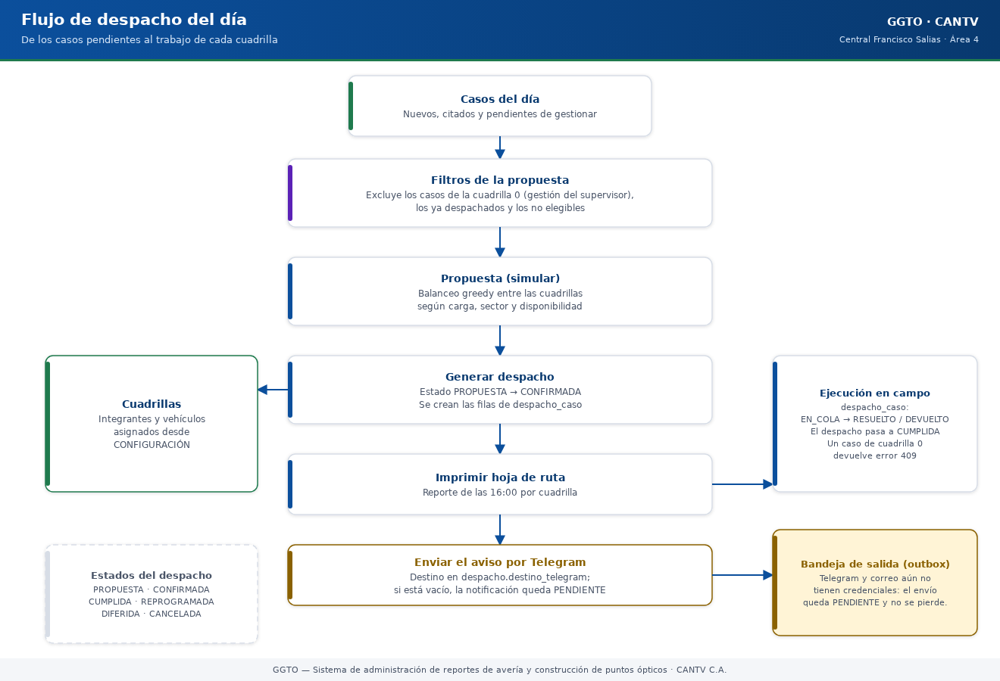
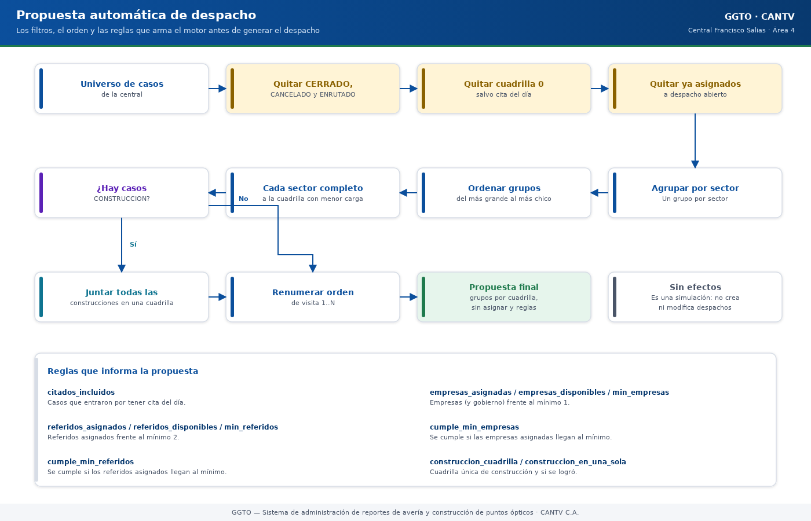

Sistema de administración de reportes de avería y construcción de puntos ópticos
Manual literal · Implementación05 — Despacho diario (módulo DESPACHO)
Manual para todo público. Explica, en lenguaje sencillo, cómo funciona el DESPACHO diario de GGTO, el Sistema de administración de reportes de avería y construcción de puntos ópticos de CANTV C.A., Central Francisco Salias (Área 4). Este manual no promete funciones que todavía no existen: cuando algo está pendiente, lo dice con claridad.
Manual para todo público. Explica, en lenguaje sencillo, cómo funciona el DESPACHO diario de GGTO, el Sistema de administración de reportes de avería y construcción de puntos ópticos de CANTV C.A., Central Francisco Salias (Área 4). Este manual no promete funciones que todavía no existen: cuando algo está pendiente, lo dice con claridad.
1Empezar en 5 minutos
Si es tu primer día con el DESPACHO, con estos cinco pasos ya puedes armar el día.
- Elige la fecha y la central. Entra a DESPACHO desde la barra superior y selecciona la
jornada. La central de esta versión es FRANCISCO SALIAS (código
2324X). - Mira la propuesta (no guarda nada). Pulsa «Simular propuesta» para ver cómo quedaría el reparto entre las cuadrillas activas. Revisa los chips de reglas: citados del día, casos especiales (referidos, empresas y gobierno) y construcción en una sola cuadrilla.
- Procesa el despacho. Pulsa «Procesar despacho». Se abre una ventana grande (90 %
de la pantalla) con el universo de casos, los sectores con su total y las cuadrillas con sus
sectores asignados. Revisa la asignación, cámbiala si hace falta y pulsa «Procesar
despacho». El sistema guarda un despacho en estado
BORRADORpor cada cuadrilla con casos. - Publica o cierra. Cuando el despacho esté listo, publícalo (
PUBLICADO). Si el día termina, ciérralo (CERRADO). También puedes imprimir la ficha de la cuadrilla en tamaño carta o enviarla por mensajería. - Reporta el resultado. Consulta el reporte de producción: asignados, cerrados, citados, diferidos, gestionados, referidos y empresas. Si hubo una avería de muchos clientes, registra una falla masiva.
2Visión general (RF-08/RF-24/RF-25/RF-27, D-52/D-66)
El módulo DESPACHO arma, publica, imprime, envía y reporta el despacho diario de las
cuadrillas de la Central FRANCISCO SALIAS (2324X). Es el Ciclo 5 del proyecto.
La decisión D-52 dio el módulo por completado con 96/96 pruebas y el despliegue
ggto-web-00007-vsr (imagen v7).
La decisión D-66 cambió la forma de repartir el trabajo. Ahora:
- Los sectores que atiende cada cuadrilla se guardan por día en una tabla nueva
(
cuadrilla_sector_dia) y el supervisor puede cambiarlos. La base pasa a tener 36 tablas. - El reparto se hace por el sector de cada cuadrilla: un sector completo va a la cuadrilla que lo tiene asignado.
- Los citados del día tienen prioridad: se visitan primero y, si su sector no tiene cuadrilla, se asignan a la menos cargada.
- Los casos especiales (referidos, empresas y gobierno) también entran al despacho.
- La construcción va completa a una sola cuadrilla.
- Si un sector no tiene cuadrilla, sus casos quedan sin asignar y el sistema lo avisa en pantalla.
- El proceso se hace en un formulario flotante con el botón «Procesar despacho».
- Se mantiene «Simular propuesta», que no guarda nada.
Aviso de seguridad importante. El servicio en la nube (Cloud Run) llamado
ggto-webes público y contiene datos personales reales (PII). Debe restringirse el acceso cuanto antes. Además, sigue vigente el riesgo aceptado D-26: todavía no hay respaldos ni recuperación a un punto en el tiempo (PITR) hasta que se migre de instancia.

Código del gráfico (Mermaid)
flowchart TD
A["Elegir fecha<br/>y central"] --> B["Simular propuesta<br/>(no guarda nada)"]
B --> C["Abrir «Procesar despacho»<br/>ventana al 90 %"]
C --> C2["Revisar universo, sectores<br/>y asignación por cuadrilla"]
C2 --> C3{"¿Cambiar la<br/>asignación?"}
C3 -- "Sí" --> C4["Elegir cuadrilla<br/>para cada sector"]
C4 --> D["Procesar despacho<br/>estado BORRADOR"]
C3 -- "No" --> D
D --> E["Editar casos,<br/>agregar o quitar"]
E --> F["Publicar<br/>estado PUBLICADO"]
F --> G["Imprimir ficha<br/>tamaño carta"]
F --> H["Enviar por<br/>Telegram o correo"]
H --> I{"¿Hay credenciales?"}
I -- "No" --> J["Queda PENDIENTE<br/>en la bandeja (outbox)"]
I -- "Sí" --> K["Estado ENVIADO"]
G --> L["Reporte de producción"]
J --> L
K --> L
L --> M["Cerrar el despacho<br/>estado CERRADO"]2.1Alcance funcional
| Requisito | Descripción en palabras sencillas |
|---|---|
| RF-08 | Distribuir el universo de averías entre las cuadrillas activas del día, agrupando por sector. |
| RF-24 | Proponer la distribución de casos antes de guardarla. |
| RF-25 | Excluir del despacho de calle los casos de la cuadrilla 0 (los que gestiona el supervisor), salvo los citados del día. |
| RF-27 | Generar el reporte de producción: asignados, cerrados, citados, referidos, etc. |
| RT-08 | Imprimir en tamaño carta la ficha de la cuadrilla. |
| RF-09 | Registrar y listar fallas masivas desde el módulo de despacho. |
| RF-10 | Enviar la ficha de la cuadrilla por Telegram o por correo. |
| D-66 | Repartir los casos según el sector de cada cuadrilla, con la asignación del día editable por el supervisor en el formulario «Procesar despacho». |
2.2Archivos de referencia
Esta tabla es para quien necesite ubicar el código. El resto del manual no la necesita para operar el sistema.
| Capa | Archivo |
|---|---|
| Direcciones de la API | app/api/routes_despachos.py |
| Servicio de reparto y asignación de sectores | app/services/despacho.py |
| Esquemas de validación | app/schemas/despacho.py |
| Modelos de base de datos | app/models/despacho_entities.py |
| Notificaciones y bandeja de salida | app/services/notificaciones.py, app/services/outbox.py |
| Página web | app/web/src/pages/Despacho.tsx |
| Formulario flotante para procesar | app/web/src/components/ProcesarDespacho.tsx |
| Gestión de direcciones sin sector (ingesta) | app/web/src/components/GestionDirecciones.tsx |
| Pruebas de integración | app/tests/test_despacho_api.py |
El módulo se monta en la aplicación principal y publica sus operaciones bajo
/api/v1/despachos. Las operaciones de escritura exigen los roles ADMIN o SUPERVISOR; las
de lectura piden solo estar autenticado.
3Modelo de despacho
El modelo guarda una cabecera por cuadrilla y un detalle con los casos asignados. Dicho simple: la cabecera dice «esta cuadrilla, este día»; el detalle dice «estos casos, en este orden».
3.1despacho
Es la tabla cabecera: una fila por central, fecha y cuadrilla.
| Campo | Tipo | Qué significa |
|---|---|---|
id_despacho |
número entero grande, clave | Identificador del despacho. |
id_central |
entero, referencia a central | Central del despacho. |
fecha |
fecha | Día de la jornada. |
id_cuadrilla |
entero, referencia a cuadrilla | Cuadrilla destino. |
estado |
texto corto | BORRADOR / PUBLICADO / CERRADO. |
generado_auto |
sí/no | Verdadero si lo propuso el sistema (RF-24). |
enviado_canal |
texto corto | TELEGRAM / CORREO. |
enviado_en |
fecha y hora | Marca del envío o de la publicación. |
reporte_produccion_en |
fecha y hora | Cierre previsto a las 04:00 p.m. |
usuario_crea |
texto, referencia a usuario | Usuario que generó el despacho. |
creado_en / actualizado_en |
fecha y hora | Auditoría temporal. |
Una regla clave: no pueden existir dos despachos de la misma cuadrilla en la misma fecha. Eso lo garantiza una restricción de unicidad sobre la combinación de fecha y cuadrilla.
La relación con el detalle borra los casos en cascada si se elimina la cabecera, y los carga junto con ella para mostrarlos de una sola vez.
3.2despacho_caso
Es la tabla de detalle: cada caso asignado dentro de un despacho.
| Campo | Tipo | Qué significa |
|---|---|---|
id_despacho_caso |
número entero grande, clave | Identificador de la fila. |
id_despacho |
entero grande, referencia a despacho | Cabecera a la que pertenece. |
id_caso |
entero grande, referencia a caso | Caso asignado. |
id_sector |
entero, referencia a sector | Sector del caso al momento de asignarlo. |
orden_visita |
entero pequeño | Secuencia de visita dentro de la cuadrilla. |
tipo_asignacion |
texto corto | REPARACION / CONSTRUCCION / REFERIDO / EMPRESA / FALLA_MASIVA. |
estado |
texto corto | ASIGNADO / GESTIONADO / CERRADO / CITADO / DIFERIDO. |
observacion |
texto largo | Nota del supervisor para ese caso. |
Otra regla clave: el mismo caso no puede aparecer dos veces en el mismo despacho. Lo impide una restricción de unicidad sobre la combinación de despacho y caso.
3.3cuadrilla_sector_dia
Es la tabla nueva del ciclo D-66. Guarda qué sectores atiende cada cuadrilla cada día. Es la lista de trabajo que el supervisor prepara antes de procesar el despacho.
| Campo | Tipo | Qué significa |
|---|---|---|
id_asignacion |
número entero grande, clave | Identificador de la fila. |
id_central |
entero, referencia a central | Central de la jornada. |
fecha |
fecha | Día al que corresponde la asignación. |
id_cuadrilla |
entero, referencia a cuadrilla | Cuadrilla que atiende. |
id_sector |
entero, referencia a sector | Sector asignado. |
usuario |
texto, referencia a usuario | Quién guardó la asignación. |
creado_en |
fecha y hora | Cuándo se guardó. |
Regla clave: un sector pertenece como máximo a una cuadrilla por día. Lo garantiza una restricción de unicidad sobre la combinación de fecha y sector.
La asignación se puede cambiar las veces que haga falta durante la jornada: al guardarla de nuevo, se reemplaza la del día. Si no hay ninguna asignación guardada, el sistema propone una equilibrada (reparte los sectores entre las cuadrillas según cuántos casos tiene cada uno) y lo indica en pantalla con el texto «Asignación propuesta automática».
3.4estados
Los estados válidos son los mismos en la base de datos, en el modelo, en la validación de la API y en la pantalla web. No hay listas distintas que puedan desincronizarse.
| Entidad | Estados permitidos |
|---|---|
| Despacho | BORRADOR, PUBLICADO, CERRADO |
| Caso del despacho | ASIGNADO, GESTIONADO, CERRADO, CITADO, DIFERIDO |
| Tipo de asignación | REPARACION, CONSTRUCCION, REFERIDO, EMPRESA, FALLA_MASIVA |
| Canal de envío | TELEGRAM, CORREO |
Al guardar una propuesta, cada caso nace en estado ASIGNADO.
4Propuesta automática y asignación diaria
El motor de la propuesta reparte el trabajo solo. Desde el ciclo D-66, el reparto no se calcula «desde cero»: se basa en qué sectores atiende cada cuadrilla, una decisión que se guarda por día y que el supervisor puede cambiar. Estas son las reglas, explicadas una por una.
4.1universo de casos
Primero se arma el universo de casos que se puede repartir. Se aplican estos filtros, en este orden:
- Solo casos de la central solicitada.
- Se dejan fuera los estados
CERRADO,CANCELADOyENRUTADO: esos ya no son trabajo de calle. - Se excluye la cuadrilla 0 (los casos que gestiona el supervisor), salvo que el caso tenga una cita del día: en ese caso sí entra.
- En la simulación se excluyen los casos ya asignados a un despacho abierto. En el
proceso del formulario flotante sí se incluyen los borradores del día, porque se van a
reemplazar; solo se respetan los despachos
PUBLICADOoCERRADO. - El universo incluye casos comunes y especiales. Son especiales las categorías
REFERIDO,EMPRESAyGOBIERNO; el resto son comunes. - El orden de la lista es: primero por sector, luego por fecha de cita (o de reporte) y por último por número de caso.
Las cuadrillas elegibles son las activas y no supervisoras de la central.
4.2asignación de sectores a cuadrillas por día
La asignación del día sale de la tabla cuadrilla_sector_dia:
- Si el supervisor ya guardó una asignación para esa fecha, se usa esa (
GUARDADA). - Si no hay ninguna, el sistema propone una equilibrada (
PROPUESTA): recorre los sectores del más cargado al menos cargado y entrega cada uno a la cuadrilla con menos casos acumulados; si hay empate, gana la de menor código. - Al guardar una asignación se reemplaza la del día: se borran las filas de esa fecha y se inserta un registro por sector. Si un sector viene repetido en dos cuadrillas, se registra una sola vez (gana la primera).
El formulario «Procesar despacho» indica de dónde salió la asignación y permite cambiarla con un selector por sector antes de procesar.
4.3reparto de los casos
Con el universo y la asignación listos, el reparto es directo:
- Los casos se agrupan por sector y se recorren del grupo más grande al más pequeño (los casos sin sector van al final).
- Cada sector completo va a la cuadrilla que lo tiene asignado.
- Si un sector no tiene cuadrilla, sus casos quedan sin asignar y se avisa en pantalla, salvo los citados del día: como tienen prioridad, se asignan a la cuadrilla menos cargada para no perder el compromiso.
- Los casos especiales (referidos, empresas y gobierno) entran igual que los comunes: siguen el sector de su cuadrilla. La propuesta informa cuántos especiales quedaron asignados.
- La construcción va completa a una sola cuadrilla: se revisan los sectores con casos de construcción, se elige la cuadrilla con más casos que no son de construcción en esos sectores (desempate por mayor carga) y se mueven allí las construcciones de las demás.
- Por último, cada cuadrilla ordena su visita: primero los citados, luego por sector y por número de caso, y renumera de 1 a N.
Si no hay cuadrillas activas de calle, la propuesta se devuelve vacía con el motivo «No hay cuadrillas activas de calle» y todos los casos quedan en la lista de «sin asignar».

Código del gráfico (Mermaid)
flowchart TD
A["Universo de casos<br/>comunes y especiales"] --> B["Quitar CERRADO,<br/>CANCELADO y ENRUTADO"]
B --> C["Quitar cuadrilla 0<br/>(salvo cita del día)"]
C --> D["Respetar despachos<br/>PUBLICADO o CERRADO"]
D --> E["Leer la asignación<br/>de sectores del día"]
E --> F{"¿Hay asignación<br/>guardada?"}
F -- "No" --> G["Proponer reparto<br/>equilibrado por carga"]
F -- "Sí" --> H["Usar la asignación<br/>GUARDADA"]
G --> I["Cada sector completo<br/>a su cuadrilla"]
H --> I
I --> J{"¿El sector tiene<br/>cuadrilla?"}
J -- "No, es citado" --> K["Citado a la cuadrilla<br/>menos cargada"]
J -- "No, es normal" --> L["Queda sin asignar"]
J -- "Sí" --> M["Asignado"]
K --> N["Juntar la construcción<br/>en una sola cuadrilla"]
M --> N
N --> O["Ordenar: citados primero<br/>y renumerar 1..N"]
O --> P["Propuesta:<br/>grupos, sin asignar y reglas"]4.4reglas (citados del día, ≥2 referidos, ≥1 empresa, frases de exclusión)
La propuesta trae un resumen con el cumplimiento de las reglas del brief (el documento de requisitos del proyecto):
| Clave | Qué significa |
|---|---|
citados_incluidos |
Casos que entraron por tener cita del día. |
citados_reasignados |
Citados que no tenían cuadrilla en su sector y se movieron a la menos cargada. |
referidos_asignados / referidos_disponibles / min_referidos |
Referidos asignados frente al mínimo 2. |
cumple_min_referidos |
Se cumple si los referidos asignados llegan al mínimo permitido. |
empresas_asignadas / empresas_disponibles / min_empresas |
Empresas (y gobierno) frente al mínimo 1. |
cumple_min_empresas |
Se cumple si las empresas asignadas llegan al mínimo permitido. |
especiales_asignados |
Cuántos casos especiales (referidos, empresas y gobierno) entraron. |
construccion_cuadrilla / construccion_en_una_sola |
Cuadrilla única de construcción y si se logró. |
sectores_sin_cuadrilla |
Lista de sectores sin cuadrilla cuyos casos quedaron sin asignar. |
cuadrillas_activas |
Cuántas cuadrillas de calle se consideraron. |
Los mínimos son constantes del módulo: 2 referidos y 1 empresa. Sus equivalentes
configurables viven en la tabla de configuración como despacho.min_referidos y
despacho.min_empresas.
El tipo de asignación de cada caso se deduce así:
- Es construcción si el tipo de caso es
CONSTRUCCION. - Es referido si la categoría es
REFERIDO. - Es empresa si la categoría es
EMPRESAoGOBIERNO. - En cualquier otro caso, es reparación.
Las frases de exclusión no se evalúan en el motor de despacho, sino durante la clasificación de la cuadrilla 0. Las listas salen de la tabla de configuración:
| Clave | Valor semilla |
|---|---|
despacho.frases_campo |
["LOSS ROJO","FALLA FIBRA","Fibra Dañada"] |
despacho.frases_supervisor |
["NAVEGACION LENTA","PON INTERMITENTE","SIN TONO"] |
despacho.columnas_evaluar |
["problema_reporte","ultimo_comentario","informacion"] |
despacho.criterio_cuadrilla0 |
"SUPERVISOR" (decisión D-59) |
El servicio normaliza el texto de esas columnas y decide si el caso pasa al supervisor. El
despacho de calle simplemente respeta la marca en_gestion_supervisor que ese criterio dejó
en el caso.
La persistencia la hace la rutina de guardado al procesar: crea un despacho en estado BORRADOR
con generado_auto=True por cada cuadrilla con casos, y sus filas de detalle en estado
ASIGNADO.
4.5proceso (formulario flotante)
El botón «Procesar despacho» de la jornada abre una ventana grande que ocupa el 90 % de la pantalla. Desde ahí se revisa y se confirma el trabajo del día. Tiene cuatro partes:
- Datos generales. Arriba se ven cuatro tarjetas: universo de casos, comunes, especiales y sin sector. En la cabecera se indica si la asignación es la guardada por el supervisor o una propuesta automática del sistema.
- Universo de casos. Una tabla con los casos que se van a repartir (ID de avería, cliente, sector, tipo, categoría, estado y si tiene cita). Tres botones filtran la lista: Todos, Comunes y Especiales.
- Sectores y cuadrilla asignada. Una tabla con cada sector, su total de casos, cuántos son especiales y cuántos citados, y un selector para elegir la cuadrilla. La opción «— Sin asignar —» deja el sector sin cuadrilla: sus casos no se despacharán (salvo los citados).
- Cuadrillas y sectores asignados. Tarjetas con cada cuadrilla activa, los sectores que tiene asignados y el total de casos que le tocarían. Si algún sector quedó sin cuadrilla, aparece un aviso en pantalla.
Al final están los botones «Procesar despacho» (guarda y cierra la ventana) y «Cancelar» (no guarda nada). La asignación guardada queda registrada con el usuario que la hizo y la fecha.
5Endpoints (app/api/routes_despachos.py — 18 operaciones)
Todas las rutas cuelgan de /api/v1/despachos. En la columna «Rol», Escritura significa
ADMIN o SUPERVISOR; Lectura significa estar autenticado.
| Método y ruta | Rol | Resumen |
|---|---|---|
POST /propuesta |
Escritura | Simula el despacho del día (no guarda nada). |
GET /proceso |
Lectura | Universo de casos, sectores y asignación del día (D-66). |
PUT /asignacion |
Escritura | Guarda la asignación de sectores por cuadrilla del día. |
POST /procesar |
Escritura | Procesa y guarda los despachos con esa asignación. |
POST "" |
Escritura | Genera y guarda los despachos (ruta anterior, todavía disponible). |
GET "" |
Lectura | Lista despachos por fecha y/o central. |
POST /fallas-masivas |
Escritura | Reporta una falla masiva. |
GET /fallas-masivas |
Lectura | Lista fallas masivas. |
GET /{id_despacho} |
Lectura | Detalle del despacho. |
PATCH /{id_despacho} |
Escritura | Publica o cierra el despacho. |
POST /{id_despacho}/casos |
Escritura | Agrega un caso al despacho. |
DELETE /{id_despacho}/casos/{id_caso} |
Escritura | Quita un caso del despacho. |
PATCH /{id_despacho}/casos/{id_caso} |
Escritura | Cambia el estado del caso. |
GET /{id_despacho}/imprimible |
Lectura | Ficha de la cuadrilla en HTML tamaño carta. |
GET /reporte/produccion |
Lectura | Reporte de producción del día. |
GET /{id_despacho}/reporte |
Lectura | Reporte de producción del despacho. |
POST /{id_despacho}/enviar |
Escritura | Envía la ficha por mensajería. |
GET /{id_despacho}/notificaciones |
Lectura | Notificaciones asociadas. |
5.1Propuesta y generación
-
POST /propuestaaceptafechaeid_centralopcionales. Si no se envían, resuelve la central configurada. Llama al servicio que construye la propuesta y no guarda nada. Devuelve el objeto de propuesta. -
POST ""es la ruta anterior de generación: genera y guarda con el motor de reparto. Si se envíareemplazar=true, primero borra los despachos en estadoBORRADORde esa central y fecha. Si ya existe algún despacho para la fecha y no se pidió reemplazar, responde 409 con el mensaje:«Ya existe un despacho para esa fecha (use reemplazar=true o edite el existente)»
Si todo va bien, persiste la propuesta y confirma la transacción. El código de respuesta es 201 (creado). La pantalla web ya no usa esta ruta: usa
POST /procesardesde el formulario flotante.
5.2Proceso del día con asignación de sectores (D-66)
Estas tres operaciones son las que usa el formulario flotante «Procesar despacho»:
GET /procesoaceptafechaeid_centralopcionales (si no se envían, resuelve la central configurada y la fecha de hoy). Devuelve el universo de casos (comunes y especiales), los sectores con su total (y cuántos son especiales o citados), las cuadrillas activas con los sectores asignados, la asignación vigente y la propuesta de reparto. El campoasignacion_origendice si la asignación esGUARDADAoPROPUESTA.PUT /asignacionrecibe la fecha y una lista de bloques «cuadrilla → sectores». Reemplaza la asignación del día y devuelve el proceso ya recalculado. Si un sector viene repetido, se queda con la primera cuadrilla que lo pidió.POST /procesarrecibe la fecha, la asignación (opcional) yreemplazar(por defecto verdadero). Antes de guardar comprueba que no haya despachosPUBLICADOoCERRADOde esa fecha; si los hay, responde 409 con «Ya hay despachos publicados o cerrados para esa fecha». Sireemplazares verdadero, borra losBORRADORprevios; si es falso y ya existe alguno, responde 409. Luego guarda la asignación (si se envió) y crea los despachos. El código de respuesta es 201 (creado).
5.3Consulta y edición del despacho
GET ""ordena por fecha descendente y por cuadrilla, y filtra por fecha y por central cuando se envían. El detalle añade el código y el nombre de la cuadrilla.GET /{id_despacho}responde 404 con «Despacho no encontrado» si el despacho no existe.PATCH /{id_despacho}aplica solo los campos enviados y descartaobservacion, porque la observación es por caso y no del despacho. Si el nuevo estado esPUBLICADOy todavía no había marca de envío, la sella con la hora actual.
5.4Casos del despacho
POST /{id_despacho}/casosrechaza con 409 los casos de la cuadrilla 0 (mensaje: «El caso pertenece a la cuadrilla 0 (supervisor)») y los repetidos (mensaje: «El caso ya está en el despacho»). Si el caso no existe, responde 404. Elorden_visitaes el indicado o, si no se indica, el máximo más uno. El sector se copia del propio caso.DELETE /{id_despacho}/casos/{id_caso}responde 404 si el caso no está en el despacho; si está, elimina la fila.PATCH /{id_despacho}/casos/{id_caso}cambia el estado y, si se envía, la observación.
5.5Impresión, reportes, envío y notificaciones
Estas rutas se explican más abajo, en las secciones «Impresión tamaño carta», «Publicación y notificación» y «Fallas masivas en despacho» de este mismo manual.
6Edición de casos del despacho y conflictos
La edición manual se apoya en las tres operaciones de casos y en la validación de conflictos del backend.
6.1Conflictos y códigos de respuesta
| Situación | Código | Mensaje |
|---|---|---|
| Despacho inexistente | 404 | Despacho no encontrado |
| Caso inexistente al agregar | 404 | Caso no encontrado |
| Caso de cuadrilla 0 | 409 | El caso pertenece a la cuadrilla 0 (supervisor) |
| Caso ya presente | 409 | El caso ya está en el despacho |
| Caso ausente al quitar o editar | 404 | El caso no está en el despacho |
| Fecha ya despachada | 409 | Ya existe un despacho para esa fecha... |
6.2Flujo de edición en la interfaz
La página DESPACHO ofrece un detalle editable por despacho:
- Cambiar el estado de cada caso con un selector:
ASIGNADO,GESTIONADO,CERRADO,CITADOoDIFERIDO. - Quitar casos del despacho.
- Agregar un caso por su ID, con tipo de asignación y observación opcionales.
Al agregar, la pantalla valida que el ID sea un entero positivo antes de llamar a la API.
Para procesar, el formulario flotante envía siempre reemplazar=true, así que los borradores del
día se reemplazan sin preguntar. Si la API responde 409 porque ya hay despachos publicados o
cerrados para esa fecha, la pantalla muestra el mensaje y no borra nada.
7Impresión tamaño carta
El requisito RT-08 se resuelve con HTML que sirve la propia API, sin motor de plantillas externo.
7.1GET /api/v1/despachos/{id}/imprimible
Devuelve una página HTML con:
- Una cabecera con central, fecha, cuadrilla, estado y número de casos.
- Una tabla ordenada por orden de visita con las columnas:
#,ID avería,Sector,Dirección,Cliente,Teléfono,Tipo,ProblemayFirma / resultado. - Una hoja configurada en tamaño carta con margen de 1 cm.
- Un botón «Imprimir» que llama a la impresión del navegador y se oculta al imprimir.
La pantalla abre ese HTML en una pestaña nueva y avisa si el navegador bloqueó la ventana emergente. La prueba de integración verifica que el contenido sea HTML, que indique el tamaño carta y que aparezcan los textos «Despacho de cuadrilla» e «ID avería».
7.2GET /api/v1/despachos/reporte/produccion
Devuelve el reporte de producción. El cálculo recorre las filas que unen despacho, cuadrilla, detalle y caso de la central y fecha indicadas, y acumula por cuadrilla y en totales:
| Total | Regla |
|---|---|
asignados |
Toda fila del despacho. |
cerrados |
El caso está CERRADO o la fila del despacho está CERRADO. |
citados |
El caso está CITADO o la fila del despacho está CITADO. |
diferidos |
El caso está DIFERIDO o la fila del despacho está DIFERIDO. |
gestionados |
La fila del despacho está GESTIONADO. |
referidos |
El tipo de asignación es REFERIDO. |
empresas |
El tipo de asignación es EMPRESA. |
El reporte global acepta fecha y central; el reporte por despacho reutiliza el mismo cálculo con la central y la fecha del despacho seleccionado. La pantalla pinta los siete totales como tarjetas y una tabla por cuadrilla.
8Publicación y notificación
8.1POST /api/v1/despachos/{id}/enviar
Envía la ficha del despacho por el canal indicado.
- El canal es un parámetro de la dirección web que solo admite
TELEGRAMoCORREO. Por defecto esTELEGRAM. - El destinatario es opcional. Si no se envía, se toma de la configuración
despacho.destino_telegramodespacho.destino_correosegún el canal. Esos valores vienen vacíos de fábrica. - El cuerpo del mensaje resume la fecha, la cuadrilla, el número de casos, los referidos frente al mínimo y las empresas frente al mínimo. Luego agrega una línea por caso con el orden, el tipo de asignación, el ID de avería, la dirección y el teléfono.
- El envío real se hace con el servicio de notificaciones. Con Telegram usa el token del bot
y la operación
sendMessage; con correo usa los datos del servidor SMTP. - La operación siempre registra una fila en la tabla de notificaciones con el estado
devuelto:
ENVIADO,PENDIENTEoFALLIDO. Solo si el estado esENVIADOmarca el canal y la fecha de envío del despacho. Devuelve el objeto de envío.
Estado real de los canales. En esta primera versión los canales previstos son Telegram, correo (SMTP) y MCP. Telegram y correo aún no tienen credenciales en producción. Por eso, si falta el token o el servidor de correo, el envío queda PENDIENTE con el motivo, y no se puede decir que ya notifique. La prueba de integración confirma que, sin el token de Telegram, el estado es
PENDIENTEy el error lo menciona. El envío real se completará en el Ciclo 9.WhatsApp no existe en esta versión. No hay que buscarlo ni documentarlo como disponible.
La aplicación móvil Flutter tampoco está desarrollada. Estaba prevista para el Ciclo 8 y ese ciclo quedó pospuesto: no hay aplicación para instalar en teléfonos.
8.2notificaciones del despacho
GET /{id_despacho}/notificaciones reconstruye el asunto con la forma
"Despacho {fecha} — Cuadrilla {codigo}" y lista las notificaciones cuyo asunto coincide, en
orden descendente por número de notificación.
La pantalla muestra una tabla con: ID, canal, destinatario, estado, error, fecha de envío y fecha de creación.
El patrón outbox (bandeja de salida, RNF-20) funciona así:
- Toda notificación se guarda primero en estado
PENDIENTE. - Un proceso la reintenta con espera exponencial: 1, 2, 4, 8… minutos, con tope de 60.
- Cuando el canal no tiene credenciales, no se consumen intentos: la notificación permanece
PENDIENTEy se reprograma.
El envío directo de la ficha no usa la bandeja de salida: llama al servicio de envío en línea y guarda el resultado de inmediato.
9Fallas masivas en despacho
9.1POST/GET /api/v1/despachos/fallas-masivas
POST /fallas-masivasrecibe la descripción, un sector opcional y el origen. El origen puede serAUTOMATICA,REPORTE_TECNICOoMCP, y por defecto esREPORTE_TECNICO. Resuelve la central y, si viene el sector, busca la cuadrilla del despacho más reciente que tuvo casos en ese sector. Crea la falla en estadoDETECTADAy responde 201.GET /fallas-masivaslista todas las fallas ordenadas por número de falla descendente.
El modelo de falla masiva incluye la clave de concentración, el estado
(DETECTADA / PLANIFICADA / ATENDIDA / CERRADA) y la planificación.
La detección automática por concentración agrupa por el campo configurado
(olt, fat o id_sector), con un umbral de casos y una ventana de horas configurables. Es
idempotente por clave de concentración mientras la falla siga en DETECTADA o
PLANIFICADA: no se duplica.
La detección bajo demanda, el cambio de estado, la planificación (RF-17) y la solicitud de material (RF-18) viven en el módulo de ALERTAS, no en el de despachos. Allí están las operaciones para detectar fallas, actualizar una falla, planificarla y pedir material.
La página DESPACHO incluye un formulario para reportar la falla (descripción, sector opcional y
origen) y una tabla con las registradas. La prueba de integración comprueba el alta en estado
DETECTADA y el listado.
10Esquemas (app/schemas/despacho.py) y modelos (app/models/despacho_entities.py)
10.1Esquemas Pydantic
Los esquemas definen los literales de estado y canal, y estos modelos de entrada y salida:
| Esquema | Para qué sirve |
|---|---|
CasoAsignadoOut |
Un caso dentro de una propuesta (marca si es especial). |
GrupoCuadrillaOut |
Un grupo de casos por cuadrilla. |
PropuestaOut |
Respuesta de la simulación de propuesta. |
SectorProcesoOut |
Un sector con su total de casos, especiales y citados (D-66). |
CuadrillaProcesoOut |
Una cuadrilla con los sectores que tiene asignados (D-66). |
UniversoOut |
El universo de casos del formulario de proceso (D-66). |
AsignacionBloque |
Un bloque «cuadrilla → sectores» (D-66). |
AsignacionUpdate |
Cuerpo para guardar la asignación del día (D-66). |
ProcesoDespachoOut |
Respuesta completa del formulario de proceso (D-66). |
ProcesarDespacho |
Cuerpo para procesar el despacho (D-66). |
DespachoCasoOut |
Una fila del detalle en el despacho. |
DespachoOut |
La cabecera del despacho. |
DespachoDetalleOut |
Cabecera + cuadrilla + casos. |
DespachoUpdate |
Cuerpo de la publicación o cierre. |
CasoAgregar |
Cuerpo para agregar un caso. |
CasoEstadoUpdate |
Cuerpo para cambiar el estado de un caso. |
NotificacionOut |
Una notificación de la bandeja de salida. |
EnvioOut |
Respuesta del envío. |
ReporteProduccionOut |
El reporte de producción. |
FallaMasivaCreate / FallaMasivaOut |
Alta y lectura de fallas masivas. |
Los esquemas de lectura se arman directamente desde las entidades de base de datos. El esquema de detalle amplía al de cabecera con el código de la cuadrilla, su nombre y la lista de casos.
10.2Modelos SQLAlchemy
El archivo de modelos declara cinco entidades:
| Modelo | Tabla |
|---|---|
Despacho |
despacho |
DespachoCasos |
despacho_caso |
CuadrillaSectorDia |
cuadrilla_sector_dia (nueva en D-66) |
Notificacion |
notificacion |
FallaMasiva |
falla_masiva |
La relación de casos se borra en cascada y se carga junto con la cabecera; la relación inversa
también está declarada. La tabla de notificaciones guarda los intentos y el próximo
intento, que son las claves del patrón de bandeja de salida. El modelo de la asignación diaria
(CuadrillaSectorDia) guarda central, fecha, cuadrilla, sector y usuario, y obliga a que un
sector aparezca una sola vez por fecha.
11Página web DESPACHO (app/web/src/pages/Despacho.tsx)
La página se monta en la ruta protegida /despacho y usa el cliente de API compartido.
11.1Estructura de la página
| Bloque | Contenido |
|---|---|
| Jornada | Selector de fecha, «Simular propuesta» y «Procesar despacho». |
| Propuesta | Resumen, chips de reglas y tablas por cuadrilla, más «Sin asignar». |
| Despachos del día | Tabla con estado, casos, canal, origen y acciones. |
| Detalle | Ficha, publicar o cerrar, casos editables, envío y notificaciones. |
| Reporte de producción | Global del día y del despacho seleccionado. |
| Fallas masivas | Alta y tabla de registradas. |
11.2Formulario flotante de proceso (app/web/src/components/ProcesarDespacho.tsx)
El componente implementa el requisito de UI 6 del ciclo D-66 y es la ventana grande (90 % de la pantalla) que se abre con el botón «Procesar despacho»:
- Al abrirse pide el proceso del día y arma la asignación local a partir de los sectores.
- Muestra cuatro tarjetas con el universo de casos, los comunes, los especiales y los que están sin sector.
- Muestra la tabla del universo con los filtros Todos / Comunes / Especiales.
- Muestra la tabla de sectores con su total, sus especiales, sus citados y un selector de cuadrilla por sector (la asignación es modificable).
- Muestra las cuadrillas con sus sectores y su total de casos, y avisa cuántos sectores quedaron sin cuadrilla.
- Al pie están los botones «Procesar despacho» y «Cancelar»; procesar envía la asignación
con
reemplazar=true.
11.3Acciones y control por rol
- El modo solo lectura para el rol
TECNICOse anuncia con un aviso y oculta simular, procesar, editar y enviar. - Las reglas incumplidas (mínimo de referidos, mínimo de empresas y construcción en una sola cuadrilla) se resaltan con chips de alerta. También se avisa si hay sectores sin cuadrilla.
- «Procesar despacho» abre el formulario flotante; al confirmar, la página recarga la lista de despachos y abre el detalle del primero.
- «Publicar» y «Cerrar» llaman a la actualización del despacho. «Imprimir» pide el HTML y lo abre en otra pestaña.
- El formulario de envío usa el canal
TELEGRAMoCORREOy un destinatario opcional cuya ayuda dice «Vacío = destino configurado». El resultado del envío se muestra con su estado y su error.
12Pruebas (app/tests/test_despacho_api.py — 23)
La tabla de pruebas de la Fase 4 registraba este archivo con 17 pruebas de integración para:
propuesta, balanceo, generación, publicación y fallas masivas. El ciclo D-66 agregó 6
pruebas (proceso, reparto por sector asignado, sector sin cuadrilla, citado reasignado, procesar
con la asignación y casos especiales), para un total de 23. El plan de pruebas asigna a la
prueba E2E-06 la cobertura de propuesta, generación del despacho y falla masiva manual para RF-08,
RF-09 y RF-24, y el archivo E2E 15-proceso-despacho.spec.js cubre el formulario flotante y
la asignación por sector.
12.1Escenarios cubiertos por la suite de integración
| Escenario | Qué se verifica |
|---|---|
| Sin token | Responde 401. |
| TECNICO no puede proponer | Responde 403. |
| Reparto por sector | 10 casos, 2 grupos, cada caso una sola vez y reglas del brief. |
| Construcción en una sola cuadrilla | Un único grupo contiene las construcciones. |
| Orden de visita por cuadrilla | Secuencia 1..N. |
| Exclusión de cuadrilla 0 | El caso marcado no aparece. |
| Exclusión de cerrados | El caso CERRADO no aparece. |
| Citados del día | Un caso de cuadrilla 0 con cita entra y marca es_cita. |
| Sin cuadrillas | Propuesta vacía y cero cuadrillas activas. |
| Generar y no duplicar | 201; 409 sin reemplazar; 201 con reemplazar=true. |
| Proceso del día (D-66) | Devuelve universo, sectores con totales y cuadrillas. |
| Reparto por sector asignado (D-66) | Cada caso cae en la cuadrilla de su sector. |
| Sector sin cuadrilla (D-66) | Sus casos quedan en «sin asignar». |
| Citado sin cuadrilla (D-66) | No se pierde: pasa a la cuadrilla menos cargada. |
| Procesar con la asignación (D-66) | Guarda los despachos y la asignación del día. |
| Casos especiales (D-66) | Referidos, empresas y gobierno entran al despacho. |
| Agregar y quitar caso | 200; 409 al duplicar; cambio de estado. |
| Publicar | Estado PUBLICADO y fecha de envío no vacía. |
| Caso de cuadrilla 0 al agregar | Responde 409. |
| Imprimible | HTML con tamaño carta, título e «ID avería». |
| Reporte de producción | Totales correctos y el reporte global es mayor o igual al del despacho. |
| Envío sin credenciales | Estado PENDIENTE y error que menciona el token de Telegram. |
| Fallas masivas | Alta en DETECTADA y listado. |
El entorno de pruebas prepara dos sectores, dos cuadrillas y un universo de diez casos que incluye dos referidos, una empresa y una construcción. Así se validan las reglas del brief de forma determinista.
Modo de pruebas: para no mezclar datos, las pruebas usan la variable DB_SCHEMA con
esquemas aislados: ggto_test para las pruebas de backend con pytest y ggto_e2e para las
pruebas de navegador con Playwright. El ciclo D-66 amplió la suite de navegador con el archivo
15-proceso-despacho.spec.js (formulario flotante y asignación por sector); sus resultados se
registran en RepoTecnico/pruebas/logs/e2e-resultados.json. Las herramientas de calidad (ruff,
mypy y tsc en modo estricto) no arrojaron hallazgos.